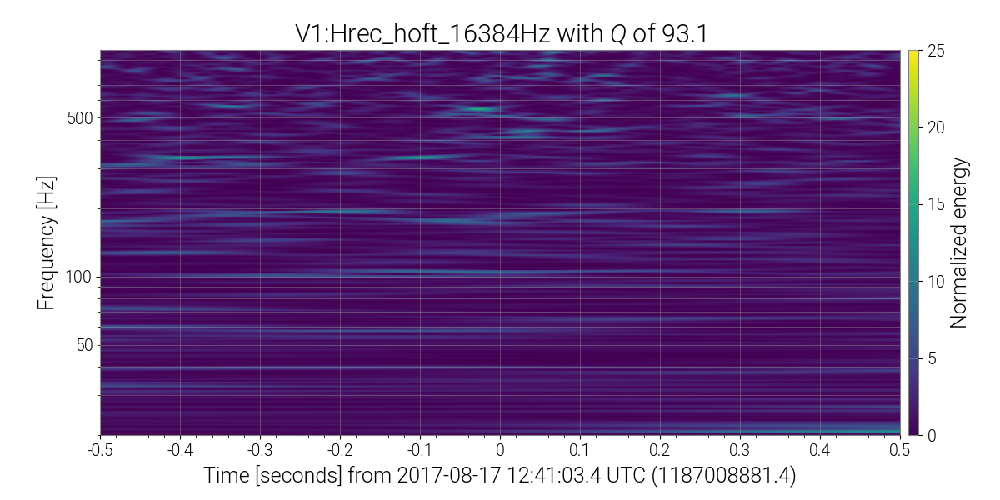

Network Ω-scan
1187008881.4
Summary
H1
Hanford Strain
H1:GDS-CALIB_STRAIN
L1
Livingston Strain
L1:GDS-CALIB_STRAIN
V1
Virgo Strain
V1:Hrec_hoft_16384Hz
Links
Internal
About this page
External
Network Summary Pages
LHO Logbook
LLO Logbook
Virgo Logbook
KAGRA Logbook
Summary
Interferometer
Multi-IFO (Network)
UTC Time
2017-08-17 12:41:03.400000
Download summary
txt
csv
tex
Channel details
H1: Hanford Strain
H1:GDS-CALIB_STRAIN
GPS Time
Frequency
Q
Energy
SNR
1187008881.537
765.0 Hz
93.1
21.1
6.5
Timeseries
raw
highpassed
whitened
Spectrogram
highpassed
whitened
autoscaled
Eventgram
highpassed
whitened
autoscaled
L1: Livingston Strain
L1:GDS-CALIB_STRAIN
GPS Time
Frequency
Q
Energy
SNR
1187008881.142
23.0 Hz
93.1
29951.9
244.8
Timeseries
raw
highpassed
whitened
Spectrogram
highpassed
whitened
autoscaled
Eventgram
highpassed
whitened
autoscaled
V1: Virgo Strain
V1:Hrec_hoft_16384Hz
GPS Time
Frequency
Q
Energy
SNR
1187008881.368
546.0 Hz
93.1
14.3
5.3
Timeseries
raw
highpassed
whitened
Spectrogram
highpassed
whitened
autoscaled
Eventgram
highpassed
whitened
autoscaled
